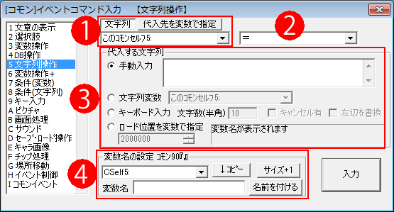
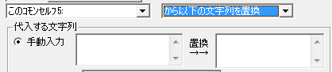

イベントコマンド 【文字列操作】
文字列変数を操作したり、キーボードからの文字入力を受け付けるコマンドです。

【各部の説明】
１．代入先の指定
代入先の文字列変数を選択します。
「代入先を変数で指定」する際は、通常/予備変数に3000000（文字列変数）以上の値を入れて使用してください。
2.代入方法
代入先への代入方法です、次の4種類があります。ここでは、代入先を「左辺」、代入する文字列を「右辺」と呼ぶことにします。
「＝」 … 左辺に右辺をそのまま代入します。
「＋＝」 … 左辺の文字列変数に右辺を追加します。
「上1行コピー」 … 右辺の上1行だけ左辺に代入します。
「上1行切り取り(+↓文ｶｯﾄ)」 … 右辺の上1行を切り取り、左辺に代入します。つまり、この処理を行うと右辺の上1行が消去されます。
「に↓から1文字切り出し(+↓文ｶｯﾄ)」 … 右辺の先頭1文字を切り取り、左辺に代入します。この処理を行うと右辺の先頭1文字が消去されます。全角、半角共に対応しています。
特殊文字の場合は特殊で、1回の処理で\A+なら「\A+」、\c[1]なら「\c[1]」分だけ抜き取ることができ、\r[X,A]など文字列が入る特殊文字の場合は「\r[」だけを抜き取ります。
「に↓から最後1文字切り出し(+↓文ｶｯﾄ)」 … 右辺の最後1文字を切り取り、左辺に代入します。この処理を行うと右辺の最後の1文字が消去されます。全角、半角共に対応しています。特殊文字の場合も、「に↓から1文字切り出し」と同様です。
「に↓から指定文字まで切出(+↓文ｶｯﾄ)」 … 「右辺」を「指定文字」まで切り出し、左辺の「文字列変数」に格納し、指定文字を除いた残った分を「右辺」に格納します（例：右辺の文字列変数に「あいうえお」が入っていて、それに対して指定文字「う」で切り出すと左辺に「あい」、右辺が「えお」になります）。
「指定文字」が見つからなかった場合は「左辺」に「<<NotFound>>」が格納され、「右辺」は「元のまま」となります。(Ver3.607以降)
また、右辺に「文字列変数」を指定していない場合はただの「切り出しのみ」の処理になります。
→ 他に「から指定文字まで切り出し」と「の指定文字以降を切り出し」の2コマンドがありますが、「に↓から指定文字まで切り出し(+↓文ｶｯﾄ)」はこの2コマンドを同じ文字列に対して1回で行える処理となります。
「に↓のファイル内容読込」 … 右辺のファイル名のデータを読み込み、左辺の文字列変数に格納します。右辺には、「Data/test.txt」という具合に代入してください。
※読み込む文字コードを「UTF-8[標準]」「SJIS」「文字コード自動判別」から選択できます。よく分からなければ自動判別にしてください（Ver3.00より）。
「をファイル↓に出力」 … 左辺の文字列変数の中身を、右辺のファイル名のデータに保存します。
※保存するフォーマットを「UTF-8/BOM有」と「UTF-8/BOMなし」から選べます。通常は「BOM有」で問題ありません。ウディタ上ではどちらでも読み込めますが、「BOM有」の方が読み込み処理が軽くて安全です。(Ver3.10より)
※保存先文字列内に「//」「\\」「..」「./」「.\」「%」「:」「*」「?」「"」「<」「>」「|」が含まれていると保存できませんので注意してください(Ver3.00より)
「に↓のファイルをBase64で読込」 … 右辺のファイル名のデータを読み込み、Base64に変換して文字列変数に格納します。
※Base64：画像など、本来人間がテキスト情報として読めないバイナリデータを「a-z、A-Z、0-9」の64文字のデータに変換します。このBase64形式のデータは、もっぱらオンラインのデータ処理に使われます。
「に↓フォルダのファイルリスト取得」 … 右辺に指定されたフォルダ内のファイル一覧を取得し、左辺に代入します。格納されるのは1ファイルにつき1行なので、各々のファイル名は「上1行切り出し」などを使用して取得してください。なお、暗号化フォルダに対しては機能しません（<<ERROR>>が返されます）。
「から↓の文字列を全消去」 … 左辺の文字列内から、右辺の文字列だけを全て消去します。（例：左辺が「あいうえお」のとき、「い」を全消去すると、左辺が「あうえお」となります）
「に↓から特殊文字を消去して格納」 … 左辺の文字列内から、右辺の文字列に含まれる特殊文字を全て消去します。フォント変更の\f[]などの特殊文字によって生まれた内部コードを全て削除します。\r[X,Y]のYY部分や\img[]指定も、「
] 」が終わる範囲まで消去されます。
「から以下の文字列を置換」 … 右辺に2つの文字列欄がでてきます。左辺の文字列内から、左側の入力欄に入れられた文字列を右側の入力欄に入れられた文字列で置換します。（例：左辺が「あいうえお」の時、「え」を「お」で置換すると、左辺が「あいうおお」になります。コンマ区切り(CSV)のデータを読み込んだ際に、「,」を改行で置換して、1行切り出しで読み込みなどの用途に使えるかと思われます。）

「から正規表現で置換」 … 右辺に2つの文字列欄がでてきます。左辺文字列内に対し、1つめの正規表現で置換対象を指定し、2つめの文字列に変換できます。（例：左辺のS1に「人数400人」が格納されているとします。右辺の正規表現に「(\d{1,4})」
→ 「$1ですよ$1」と指定すると、S1には「人数400ですよ400人」という数値が返されます）
→ ※「正規表現」内で\s[0]などの特殊文字を使う場合は<<>>で挟んでください(例：<<\s[0]>>など)。
<<>>部分は自動で消滅します(「<<」を文字として直接入れたい場合は「\<\<と」記入してください）。
「から指定文字まで切り出し」 … 左辺の文字列内から、入力欄に入れられた文字列までだけ切り出します（例：左辺が「あいうえお」のとき、「う」まで切り出すと左辺が「あい」になります）。指定した文字列が見つからない場合、「<<NotFound>>」を返します。
「の指定文字以降を切り出し」 … 左辺の文字列内から、入力欄に入れられた文字列以降だけ切り出します（例：左辺が「あいうえお」のとき、「う」以降を切り出すと左辺が「えお」になります）。指定した文字列が見つからない場合、「<<NotFound>>」を返します。
「から正規表現で()内を抽出」 … 左辺の文字列内から、入力欄に入れられた「正規表現」の()内に該当する部分だけ切りて左辺に格納します。何も見つからない場合は空文字列が格納されます。（例：左辺のS1に「人数400人」が格納されているとき、正規表現で「人数(\d{1,4})人」と指定すると、(\d{1,4})部分に該当する「400」という数値だけS1に返されます）
→ ※「正規表現」内で\s[0]などの特殊文字を使う場合は<<>>で挟んでください(例：<<\s[0]>>など)。
<<>>部分は自動で消滅します(「<<」を文字として直接入れたい場合は「\<\<と」記入してください）。
「隠しコード実行(<<から始まる）」 … 右辺に入れたコードに従って、通常のコマンド指定ではできない、特殊な処理を実行できます。隠しコードの一覧はこちらです。
３．代入する文字列
代入する文字列は、次の4種類の方法で指定できます。
・手動入力 … 手動で文字を入力します。この入力には\v[?]や\s[?]といった特殊文字も使用可能です。
・文字列変数 … 他の文字列変数を読み込みます。
・ロード位置を変数で指定 … 「変数の値」の文字列変数を読みに行きます。たとえば読み込んだ変数値の値が3000002（文字列変数2番のコード）という風に格納されていれば、文字列変数2番を読みに行きます。
・キーボード入力 … プレイヤーにキーボードからの文字入力をうながします。キャンセル有りにするとEscキーで入力をキャンセルすることができます。なお、この文字入力には日本語も使用可能です。左辺を置換にチェックをすると、左辺に元から入っていた文字列が入力された状態で文字入力をさせることができます。
※テストプレイ時に限り、『キーボード入力』中に「F7～F9キーなどのデバッグメニューを表示する」あるいは「F11キーで再読み込みする」と「 キーボード入力中の文字のサイズが変わってしまいます 」が、文字サイズを設定するタイミングは「キーボード入力の開始時」のみなので、この動作自体は仕様です。(2017/3/7追加)
※\は自動で文字の\に変換されるため、\self[0]などは変換できません。<C>、<R>、<L>は自動で消去されます。
４．変数名の設定
この欄で文字列変数に名前を付けたり、最大数を増やしたりすることができます。設定したい変数をプルダウンリストから選び、設定したい名前を入力したら「設定」ボタンを押してください。
「↓コピー」ボタンは、プルダウンリストで選択中の文字列変数の名前を下にコピーします。
「サイズ+1」ボタンは、文字列変数の最大数を一つ増やします。
【隠し機能 自動キー入力でEnterを入れて「キーボード入力」を強制決定する】
この「文字列操作」の「キーボード入力」中、並列イベントなどで「キー入力」コマンドの「自動キー入力」を使って「Enter（キーコード：128）」を入力すると、そこまで入力した分でキーボード入力が決定されます。
時間制限付きの文字入力イベントなどに使えるでしょう、。